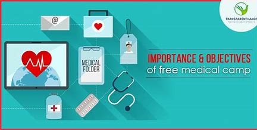
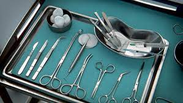
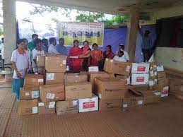

what are the requirements to Organize a free Medical camp?

Free medical camps are organized to provide health services and create an
environment where the underprivileged community gets sensitive about health issues.
Thousands of poor people in villages and urban areas attend the health camps.
These camps provide free tests for Diabetes, Blood Pressure, Hemoglobin etc and
offers counseling & treatment by trained Doctors and Specialists. Free medicines are
given to the people. Iron and Folic Acid supplements are also distributed to the
malnourished at the camp. The underprivileged community also has aging members who
are not able to purchase health care and access the facilities due to the long distance
and other joint problems that have demobilized them.
Apart from providing basic treatment and general check-up, the Medical Camps also help
people to be aware of their health status. Often these camps provide support exclusively for
adolescent girls and boys to inform them on reproductive and sexual health. Sanitary pads are
distributed to adolescent girls to encourage better hygiene practices during menstruation.
Importance and Objectives of the Free Medical Camp
Requirements for a medical camp:
The main objective of all medical camps is to bring affordable healthcare and free health information to the community and
identify the common health problems in order to devise ways of addressing them. A lot of logistic supports are needed to carry out
such responsible programs successfully.
Therefore a list of the requirements is presented below. Additional financial resources will be required for transportation
of supplies, personnel, and volunteers from one region to another. Heavy security is required and sufficient nonmedical personnel
to assist with registration and the management of the crowds.
Drugs:
Deworming agents or Anthelmintic,
Anti-malaria, Antibiotics, Cough Syrups, Antihistamine, Analgesics, Antiepileptic treatment, Eye ointments, Local applications,
Though some commonly used drugs have been suggested here, it is always better to consult a physician about which drugs are required for specific medical camps. A thorough research can be conducted within the community to find out the prevalent diseases in particular areas and drugs can be administered accordingly.

Surgery supplies: Needles G 18, 21, 22, 24, Syringes 20cc, 10cc, 5cc, 2cc, Antiseptic, Disposal dressing packs, Sterile surgical packs, Cotton wool, Wound dressing gauze, Rubber gloves sterile and nonsterile.

supplies and materials: Tents, chairs, and stationary for clinical recordings, Vital signs monitoring equipment, medical equipment, stethoscope, and torches ophthalmoscope etc. Reading glasses, Refreshment for volunteers, Insecticides, treated mosquito nets, and blankets, Wheelchair for physically challenged patients, Baby clothes from age zero to five years old, Sanitary pads, Condoms and tampons.
Required personnel to support the medical camp: Doctors, Clinical officers, Dentists, Opticians, and Nurses. Medical students, Clerical staff, Pharmacists, and Counselors, Administrative and security teams to support registrations, managing crowds, and general logistics.